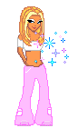
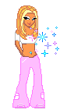
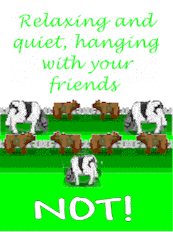
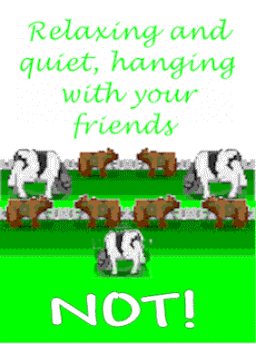
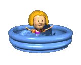
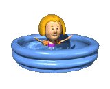

The Web 1.0 room comprises two distinct spaces, namely, the Internet's girl room and the basement area. The textures in the former have been created using KidPix, a child-oriented drawing program from the year 2001, and are designed to resemble the graphic style of the early web. Voxel models and GIFs are also employed to generate the early Internet environment and resemble, for instance, GeoCities page. The design of the early web pages was quite different from what we can see today.
The web design of custom-made pages was based on table structure and filled with links leading to other places on the internet. When you enter a website, you see the “welcome” signs and other signatures that were made by the website’s owner, resemble visiting somebody’s house.
That was an idea behind creating the web 1.0 space in our project – to use the web design patterns of early web to construct the interior architecture for the pro-Metaverse platform.
We would like to see this technique not only as a nostalgic reference but as a means of complex and unexpected world-building, where internal connections between worlds and exploratory archives are established. In the basement space, we have arranged several such external and internal archives (on are.na, Tumblr, and worlds in VRC), which are the result of theoretical and practical research in virtual worlds. The transportation between different platforms and the limitless structure of the world are important to us as a technique for transversal world-building within the pro-Metaverse.
 



 



 
